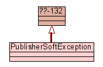

Home
Trees
Indices
Help
Peach API
Peach :: publisher :: PublisherSoftException :: Class PublisherSoftException
[
hide private
]
Class PublisherSoftException
source code

Recoverable exception occured in the Publisher.
Home
Trees
Indices
Help
Peach API
Generated by Epydoc 3.0.1 on Wed Oct 22 21:36:42 2008
http://epydoc.sourceforge.net